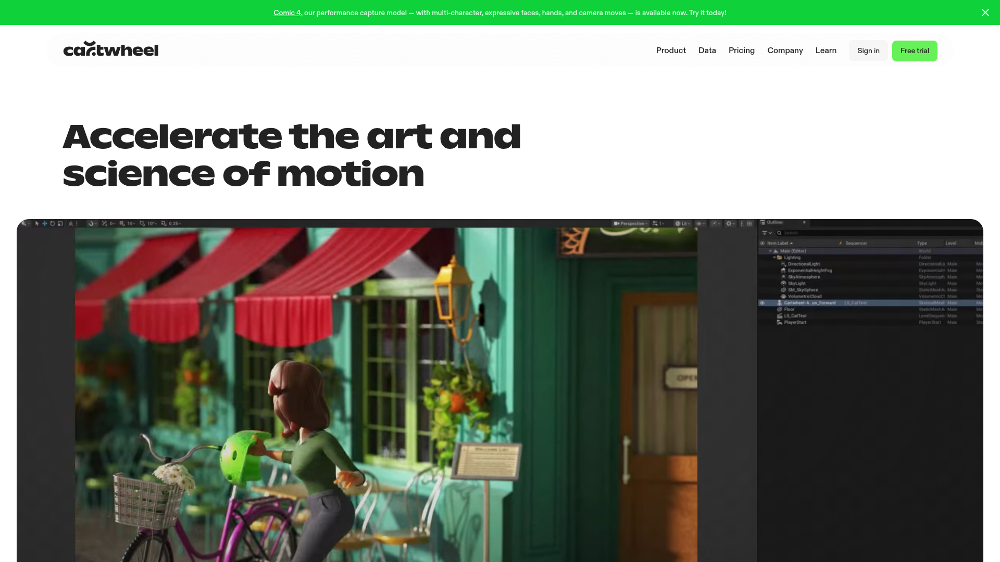

> 調研日期：2026-06-19
> 文件：https://docs.getcartwheel.com
▲ Cartwheel Pose Mode Demo
Cartwheel 是由前 OpenAI 科學家 Andrew Carr 與前 Google 創意總監 Jonathan Jarvis 於 2023 年共同創立的 AI 3D 動畫平台。2025 年 5 月正式公開發佈，獲得 $15.6M 融資（投資者含 DreamWorks 創辦人 Jeffrey Katzenberg 的 WndrCo、Craft Ventures、Runway、Accel、Khosla）。
核心定位：用 AI 控制 3D 骨架 Rig（不是生成像素），輸出可編輯的動畫資料，直接匯入 Maya/Blender/Unreal 進一步修改。
解決的問題：

▲ Cartwheel 官方首頁 — AI 3D 動畫生成平台
| 功能 | 說明 |
|---|---|
| Text-to-Motion | 輸入文字描述（如「cast a wizard spell」「salsa dance spin」）生成 3D 動畫 |
| Motion Library | 瀏覽搜尋預製動畫庫（含 AI 生成 + 清理過的 Mocap 資料） |
| Motion Remixing | 組合多段動作形成連續序列 |
| Video-to-Motion | 上傳參考影片，AI 提取 3D 動作（類似 rotoscope） |
| Pose Mode | 3D 人體模型直接拖拉擺 pose，作為生成輸入 |
| Custom Character Upload | 上傳自己的角色模型套用動作 |
| Character Posing & Rendering | 擺 pose + 用 AI 渲染成任意視覺風格圖片 |
| Custom Style Model | 上傳 3-5 個參考動作，後續生成匹配該風格（即將推出） |
完全瀏覽器端操作，無需安裝任何軟體。
| 方案 | 月費 | 年費 | 內容 |
|---|---|---|---|
| Creator（免費） | $0 | $0 | 150 Spins/月、Motion Library、上傳/生成角色、匯出 video + 3D 格式 |
| Professional | $39/月 | $390/年（$32.5/月） | 1,500 Spins/月、Maya 擴展 Rig 功能 |
| Unlimited | $95/月 | $950/年（$79.16/月） | 無限 Spins、進階支援 |
| Enterprise / 自訂模型 | 聯繫業務 | — | 客製化風格模型、API 存取、大型團隊 |
> 「Spin」= 一次動作生成消耗
| 面向 | 評估 |
|---|---|
| 格式相容 | Kimodo 輸出 BVH，Cartwheel 輸出 GLB/FBX — 可能需要格式轉換，但都是標準骨架動畫格式 |
| 互補定位 | Kimodo = 離線/本地 Text-to-Motion；Cartwheel = 雲端/多模態生成 + 編輯 |
| Pipeline 整合 | 可以考慮：Kimodo 生成 BVH → 匯入 Blender 做 Retarget → Cartwheel 做額外動作混合/補充 |
| Video Reference | Cartwheel 的 Video-to-Motion 功能可作為 Kimodo 的替代/對照方案 |
| 量產化 | Cartwheel 的 API（開發中）未來可用於批次自動化 |
| 風格遷移 | Cartwheel 的 Custom Style Model 功能可能有助於統一不同來源動作的風格 |
結論：Cartwheel 適合作為 Kimodo 的互補工具，特別在「影片參考轉 3D」和「動作混合/編輯」場景。但目前不適合完全替代 Kimodo 的離線量產角色。
┌─────────────────────────────────────────────────────────┐
│ AI 動作量產工作流中的 Cartwheel 定位 │
├─────────────────────────────────────────────────────────┤
│ │
│ [創意構思] ──→ [Text/Video/Pose 輸入] │
│ │ │ │
│ ▼ ▼ │
│ ┌─────────┐ ┌──────────────┐ │
│ │ Kimodo │ │ Cartwheel │ │
│ │(離線本地)│ │ (雲端多模態) │ │
│ └────┬────┘ └──────┬───────┘ │
│ │ BVH │ GLB/FBX │
│ ▼ ▼ │
│ ┌─────────────────────────────────┐ │
│ │ Blender Retarget + Clean-up │ │
│ └─────────────┬───────────────────┘ │
│ │ │
│ ▼ │
│ ┌─────────────────────────────────┐ │
│ │ 遊戲引擎 (UE5 / Unity) 匯入 │ │
│ └─────────────────────────────────┘ │
│ │
└─────────────────────────────────────────────────────────┘
Cartwheel 在工作流中的角色：
| 項目 | 評分 (1-5) |
|---|---|
| 與我們目標的相關性 | ⭐⭐⭐⭐ |
| 技術成熟度 | ⭐⭐⭐ |
| 易用性 | ⭐⭐⭐⭐⭐ |
| 性價比 | ⭐⭐⭐ |
| Pipeline 整合潛力 | ⭐⭐⭐⭐ |
| 量產化適合度 | ⭐⭐⭐ |
推薦等級：🟡 值得持續關注，待 API 成熟後可納入量產工作流